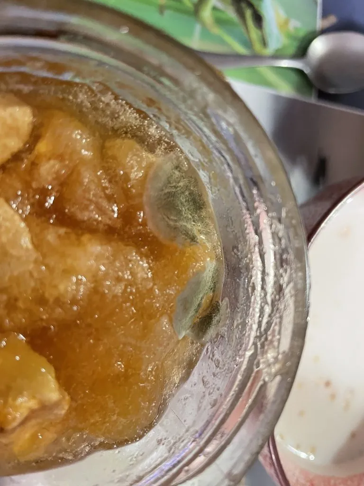

真菌 · 真菌界
灰绿曲霉 Aspergillus glaucus

灰绿曲霉的菌落呈灰绿色，耐干旱、能在低水分粮食上生长，是陈粮、干果和皮革上常见的储藏霉菌。
- 分类
- 门子囊菌门纲散囊菌纲目散囊菌目科曲霉科属曲霉属
- 栖息环境
- 低水分的陈粮、干果、干草、皮革与旧纸张上
- 地理分布
- 世界性分布，粮库、干货仓库与旧物堆放处常见
- 保护级别
- 暂无评估（IUCN 未评估，储藏霉菌）
物种志
灰绿曲霉是子囊菌门曲霉科的真菌，菌落呈灰绿色、蓝绿色至暗绿色，表面呈粉末状或绒状，边缘白色。分生孢子梗直立，顶端膨大形成顶囊，上面着生瓶梗和链状分生孢子，孢子呈灰绿色。它的有性阶段形成黄色的闭囊壳，内含子囊和子囊孢子，常在陈粮上出现。
灰绿曲霉最突出的特点是耐旱：它能在水分很低（水活度约 0.75）的基质上生长，因此常出现在陈粮、干果、干草、皮革和旧纸张上，是典型的储藏霉菌。它在粮食储藏中会造成霉变、发热和品质下降，部分菌株还能产生毒素，因此粮库要控制水分和湿度。另一方面，灰绿曲霉也被用于某些传统发酵和酶制剂研究，但总体以危害储藏物为主，发现粮食长灰绿霉后不宜食用。
形态与习性
- 菌落灰绿色至蓝绿色，粉末状
- 分生孢子链状，灰绿色
- 有性阶段形成黄色闭囊壳
- 耐旱性可在水活度约 0.75 的基质上生长
- 危害引起粮食、干果霉变，部分产毒素
- 生境陈粮、干草、皮革与旧纸张
- 防控控制粮食水分与仓库湿度
趣味知识
- 灰绿曲霉特别耐旱，粮食含水量很低时它也能长。
- 它常出现在陈粮和干果上，是典型的储藏霉菌。
- 灰绿曲霉的有性阶段会形成黄色的小闭囊壳。
- 粮库要把水分和湿度控制好，才能防止它霉变。